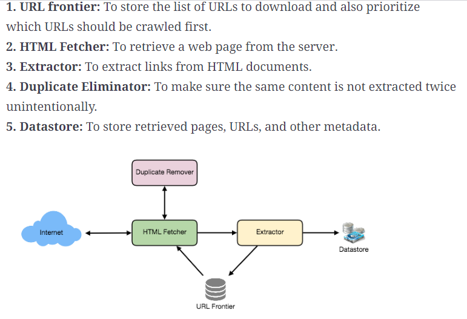
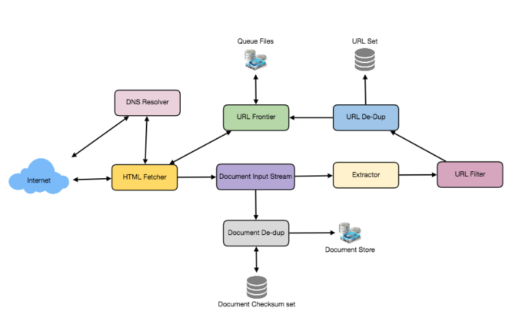

传统的网络爬虫/Crawl Wikipedia/黑客版本的爬虫
FB crawler design
这个题目的几种表达方法.
第一种表达方式:
假如你是一个黑客，你有10，000台电脑。带宽和cpu 都很高。但是node 之间的访问非常受限。
你从 某个根节点url 开始访问， 大概用过递归能得到10^9个url。你需要吧每个url的内容都下载下来，而且不能重复下载。
现在请你设计一个系统：
下载所有的网站， 不能重复下载， 尽量减少node之间的traffic。
https://www.1point3acres.com/bbs/forum.php?mod=viewthread&tid=641063&extra=page%3D1%26filter%3Dsortid%26sortid%3D311%26searchoption%5B3086%5D%5Bvalue%5D%3D10%26searchoption%5B3086%5D%5Btype%5D%3Dradio%26searchoption%5B3087%5D%5Bvalue%5D%3D2%26searchoption%5B3087%5D%5Btype%5D%3Dradio%26searchoption%5B3046%5D%5Bvalue%5D%3D2%26searchoption%5B3046%5D%5Btype%5D%3Dradio%26sortid%3D311%26orderby%3Ddateline
第2种表达方式:
We need to deploy the same software on each node. We have 10,000 nodes, the software can know about all the nodes.
We have to minimize communication and make sure each node does equal amount of work. should be no sort of centralization of any kind
https://leetcode.com/discuss/interview-question/system-design/124657/Facebook-or-System-Design-or-A-web-crawler-that-will-crawl-Wikipedia
Ace system design:
1.Requirements:
功能性需求：爬取全网信息
非功能性需求： 高扩展性，全网爬取。
核心网站，低延迟
遵守规则，不过载。（politeness)
高可用性，避免死循环
非需求： 索引，搜索，排序
2.Estimation
网页爬取QPS, storage
Assume we have 500M web sites, each website has 100 URL, each page size 100kb,
and we need crawl the internet every two weeks.
QPS:
500*10^6* 100/(86400 * 14) = 35000 qps
storage:
500*10^6* 100* 100kb = 5PB every 2weeks
5PB/2 * 52 * 5 = 650PB in 5 years
3. Service: （Lookat diagrames at C:\Users\Lyn\Desktop\Company interview questions\Ice System design class\5 Crawler)
1. URL队列（ Url fontier)
2. 网页下载服务
3. 网页存储
4。URL提取器
High level.
Internet
|
url !
URL Queue -> fetch & render
url
^ |
| !
HTML processor <- webpage storage
1. URL frontier
如何实现优先级别?
use multiple Priority queues. 高优先级队列爬的频率高，
这样也不会starve低优先级别的队列
p0
p1
.
.
.
pn
如何控制爬取同一个网站的频率？
timestamp + frequency ->single domain queue id
2. Fetcher & render
如何判断有无更新？
HEAD request -> header(last modified)
3. html processor
URL extractor
content signature (判断两个网页是否一致)
一个HTML page download 下来后，要做哪些事情？
Async job
a. extract url
b. build index
c. build signature (同样的web page就不存了)
url 该不该爬取应该考虑哪些因素？
robot.txt 频率 范围
你上次爬取的时间 （timestamp + robot.txt.frequency)
经验（苹果发布会，更新速率比robot.txt.frequency要快）
Questions:
What if one node fails or does not work?
Consistent hashing: if one node is done, the job would be done be the node on the right.
How do you know when the crawler is done?
Solution:
Hint: the software can know about all the nodes. => one node knows all nodes. It is a Peer to peer networking
Each node does the same amout of work: Consistent hashing:
Keyword:
Peer to Peer (P2P) DHT : Distributed Hash Table,
Implementaion: Consistent hashing:
DHT 解决的问题. use a network of nodes to do the same the same thing. And node often joins and leaves
the network.
Use consistant hashing as hashing algorithm to hash all node to a ring uniformally. (Hash by Ip?), then
hash the url into the ring uniformally. Every node is responsible for the url on the left arc.
Since hash algorithm is the same to all nodes, once one node crawl and get new urls, apply consistent hashing
algorithm to it, and figure out where it is in the ring and then figure out who is responsible for crawling it,
and then send this URL to that node. before send the url over, check if that node is alive, if not, send it to
its predesucssor, which is on the right of this node. The node needs to maintain its succussor and predesuccor.
problem is one node only knows all the URl it is crawling, other nodes do not know. What to do when it fails
and it doesn't finish all the crawling.
Chord or KAD algorithm which is built on top of that, to see how to minimize communications and see how nodes collaborate.
Tradition Crawler design:
Ace crawler design (讲的像科普知识,缺乏design价值)
Grokkking crawler design（讲的比较详细)
Distributed Hashtable(专门consistent hashing, 还是比较浅)
Chord: A Scalable Peer-to-peer Lookup Service for Internet(讲的很深(consistent hashing 原理，key look up, nodes join/leaves))
Applications Chord论文中文讲解
I requirement + capacity
500M websites
Each website has 100 pages
Each page has average 100kb.
Need to crawl the entire internet every 2 weeks
Qps = 500M * 100 /(86400 * 14) = 41335
storage = 500M * 100 * 100kb = 5PB


II Core component:
1. URL frontier :
step 1: normalization
step 2: filter(blacklist)
step 3: has seen ? (dedupe, need to maintain a url visited checksum dataset)
step 4: add to URL crawl list.
step 4: prioritization. Put URL in queues with different priority. Front queue selector selects URL based on priority randomly. Make sure
Hight priority queue gets severd and low priority queue not get starved.
Put URL in different queue again and each queue has the same domain. back selector selects url from those queues based
on a min priority queue that has the allowd visting time. t + deltaT. Each time it selects a url from a queue, it calculates the new
time and insert it in min priority queue. Such that, it knows who is the next one to crawl and do not overload the website.
2. Fetcher (Async worker)
The component that actualy sends request to website.
step 0: Get URL from url frontier
step 1: Send HEAD request to url and check last modified header and see if it is different from last time
Step 2: if yes, send GET request to url and get the html page.
step 3: Give the html page to extractor
3. Extractor (process HTML page)
URL extractor and send it to url frontier
Dedupe html content, and save it in big table.
Bottom neck: How to distribute URL to worker?
1. Simple Hash.
2. Optimization: based on location. 中国机器爬中国网站, 美国机器爬美国网站.
3. Further optimization: Based on domain
1台机器固定的爬多个Domian. 这样使得 Worker 可以借助本地优势 (Locality)，在内存中存储DNS信息,不用反复解析domain name.
缺点是可能work load分配不均匀, 有些机器任务过重,有些机器没任务.
解决方法是consistent hashing, 但就不是hash by domain了
content相似度分析?
1. Hashing. 不可靠
2. 近似算法. Jaccard index, cosine similarity
Database Schema:
Domain table
Domain Id
Domain name
last Crawl time
URL table
Url id
URl
last Crawl time
next Crawl time
Html is stored in big table(S3, Azure storage)
Politenss: robot.txt Web site declariation file. Parse it before downloading anything.
Groking website Question
Breadth-first or depth-first?
BFS: 一次爬一个website的一个page, 慢,但是不影响网站正常traffic, But need to do three way handshake everytime establishing connection.
DFS: 一次性爬完一个website, 快,但是那个时间段可能会overload, 影响网站正常traffic
Scalability:
The URL frontier is the data structure that contains all the URLs that remain to be downloaded.
We start crawling using BFS of the web using seed url set. BFS requires a FIFO queue.
Assume there are 50B URls (2.5TB) and those cannot be saved in one server. we need to distribute URL in multiple machines.
using consisting hashing function URL -> server.
In each server, There are multiple threads crawling the website and each thread is responsible for a FIFO sub queue.
We use another local hash function from URL domain-> Thread(Queue). (一个Queue负责多个Domain)
The workflow is like One thread removes url from queue and crawls website,
gets more urls. Then It will apply hash function to first decide which machine is responsible for crawling the website and forwards
the url to that server, and then that server applies local hash function to decide which thread(queue) is responsible for crawling that website.
And then place the url in the sub queue that thread will crawl.
By doing this, at any given time, there is only one thread on one machine crawling the specified web site.
" Following politeness requirements must be kept in mind while designing a distributed URL frontier:
Our crawler should not overload a server by downloading a lot of pages from it.
We should not have multiple machines connecting a web server. (这点如果是consistent hashing就无法保证，因为相同的domain 可能会分到不同的worker server)
How to dedup html content?
Hash and generate 64bit checksum. 2^64 = 10^19 > 15B = 10^10 pages assumption. so 64bit check sum can represent all pages.
Size of checksum?
8byte * 15B = 1.2 *10^11 = 120GB. Those memory is distributed in different servers.
What if one serve do not have that many memory?
Save smaller data in LRU cache and everything in hard disk. the check flow is check LRU cache first and then
check hard disk. if not present, save the content and update hash.
DNS looks up is a big bottom neck. How to solve this?
Cache DNS look up in the server and one server is responsible for crawling fixed website.
How to dedup URL content?
4bytes checksum.
15B * 4byte = 60GB. Cache it in memory that can be used by all threads in one host.
6. Checkpoint
It does checkpoint periodically and dumps the snapshot of the data it is holding to remote machine, such that
when it is down, other machine can take over from last snapshot, since crawling takes weeks to finish.
7. Fault tolerance ( How do we know a node is down and how to continue its work)
基于第三编文章 必须有两个条件：
1. 必须有一个Master, 不停的heartbeat worker server, once worker server is down. It konws who to take over, and tell that machine to continue its work
这样就不是decentralized.
2. Each worker must periodicaly dump a snapshot of the data it is saving to external strorage(likely the master machine). that way when it recovers or other machine takes over,
it can continue its work.
3. When worker 4 forwards the url to worker 8 and get time out, it forwards the url to right node, which is worker 7.
8. Data Partitioning
Each machine holds 3 set of data.
1. URL to be visited （ 一般是放在Queue里面）
2. URL checksum
3. Html checksum.
9. Crawler Traps: To make crawler to crawl indefinitely.
purpose:
a. Catch search engine crawler to boost their web rating.
b. Anti-spam traps are designed to catch crawlers used by spammers looking for email addresses,
Chord: A Scalable Peer-to-peer Lookup Service for Internet
consistent hashing:
Every key on the ring goes clockwise, the first node/server it meets, is the server that stores it. In another word,
Every server goes counter clockwise, it contains all the data until it hits another server.
chord data structre is a doubly linked list.
Lookup takes O(n). Example. There are server 1, 5, 10 , 20. key is 17. it starts from any server node,
Going clockwise. say 1, 1->5->10->20. Since 20 is greater than key 17. Say server 20 contains key 17.
Then it uses finger table to improve the time complexity.
Read Chord中文翻译理解的更深刻。
1。 每一个URL hash成一个64bit的值。
2。 每一个server用Ip address 用同样的hash function hash 成64bit的值。
3。 画一个圆，代表值从[0 - 2^64 - 1], 每一个URl和Server都对应圆上的一个Node值。
4。 每一个url 对应的点顺时针开始找下一个server, 就是处理这个URL的server.
假设这个hash成3个bit的数字。 2^3 = 8 [0, 1, 2, 3, 4, 5, 6, 7]
假设0， 1， 3是server，
假设2， 3， 6， 是Url.
url 2 -> server 3
url 3 -> server 3
url 6 -> server 0
这是直观的看出来的，如何通过一个key找到node？ 时间复杂度是多少？
每一个server存顺势针下一个server的位置(successor)，和逆时针上一个server的位置(predecessor)
Step1:
Check predecessor, and find the range this server is responsible for. (predessor, itself]
if the key falls into the range, crawl it. otherwise, check successor and predessor, who is closer
to this url, send it to the closer one.
Example:
succussor predecessor
server 0 1 3
server 1 3 0
server 3 0 1
Step1:
假设server 3 crawl 到一个新的url, hash值是1， 如何知道往哪个server发？
只能查表发现我的predecessor是1,我只处理(1, 3], 不在这个范围内。
successor is server 0, predecessor is server 1, hash is 1
所以predesessor离hash 1更近, 所以发给predecessor server 1.
server 1 gets hash 1 url, then check predecessor, 0. It is responsible for (0, 1]. It is in my range
so, I am responsible for it.
So Find a server that stores the key takes O(n/2) = O(n) time.
Optimization:
如果每一个server多存一些meta data可以找的更快。 Maintain a m bit table(finger table). n + 2^(i-1), whiere i [1, m];
the first bit is n + 1 url position, the second bit is n + 2 url position, n+4 url position.
Look up improves to lg(n).
Add a node?
加一个Node, 只需要更新他本身和前后两个node的predecessor and successor, 就可以了.不需要全局rehash.
chord 的上层软件负责找到new node的successor去分一部分数据给new node crawl.
这个上层软件必然是master node,所以数据还是需要备份到remote machine(master)